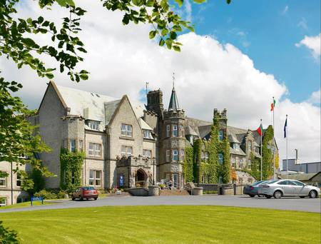
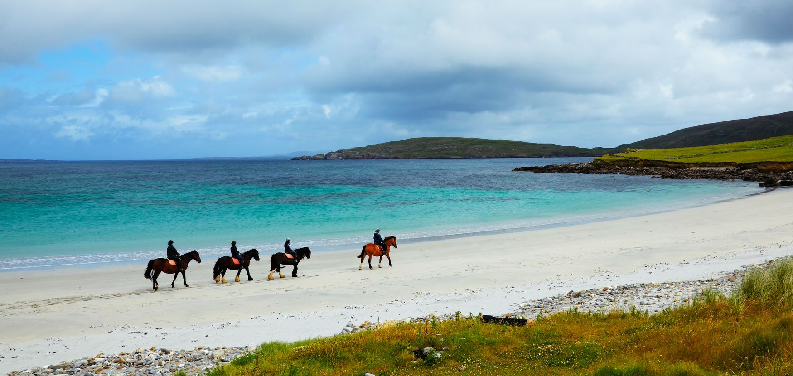
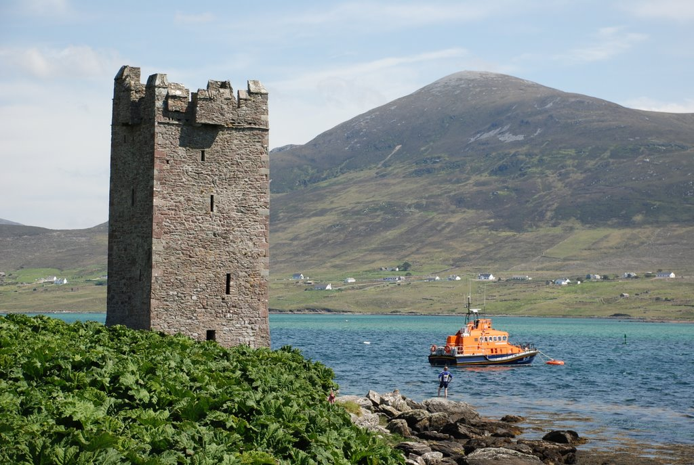
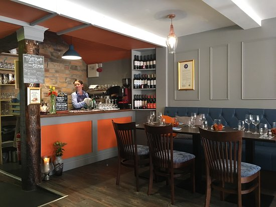

Breaffy House Resort is located in the heart of County Mayo and is the perfect destination if you are looking for a well-deserved and relaxing break! Set on 90 acres, the resort consists of Breaffy House Hotel and Breaffy Woods Hotel, only a 2 minute stroll between sister properties and renowned as two of the very best hotels in Mayo. Breaffy House Hotel in Mayo offers traditional old world Irish charm and hospitality complimented by magnificent grounds for rambling. Retaining some of its original country house atmosphere, the house dates back to 1890 and is an excellent base for a relaxing break in Mayo.
Claremorris Equestrian Centre is only a 20 minute drive from Breaffy. The Centre provides high quality instruction either indoor or outdoor depending on the weather. The Centre also provides customised tuition to meet the needs of the beginner and not so beginner and the professional staff can also provide help with problem horses. This is a centre with a family friendly atmosphere with lessons the whole family can enjoy and where you can learn the A to Z about horses. Horse riding last's from 1 hour upto 3 hours depending on the route you'd like to take. We also offer horse back or pony back riding. Reservation is essential.
Achill Island's rugged landscape features dramatic cliffs, soaring mountains, remote lakes and secluded beaches - including no fewer than five Blue Flag beaches. This unique landscape is ideal for a wide range of outdoor activities, from surfing, windsurfing and scuba diving to hill walking, fishing, golf and much more. Achill Island is located a pleasant 50 minute drive from Breaffy House Resort & Spa.
Castlebar has become one of Mayo’s premiere dining locations and at its heart a seasonally inspired evening restaurant, Dining Room By using the finest local and regional produce, Dining Room’s modern and elegant menu showcases the best Mayo has to offer. Nestled in the heart of Castlebar, Dining Room is a modern and intimate dining experience. The staff pride themselves on a restaurant which is comfortable.
